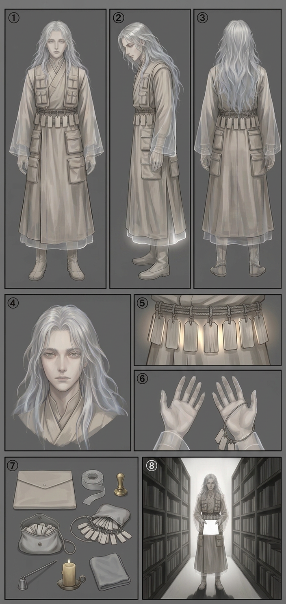

PATRA — model sheet
Chapter 001 · first appearance. The drawing reference for every page this character is on — the eight required panels — front · side · back · face · detail · hands · kit · action, in the house panel order, per the character art spec.

🔍 click to zoom
1front2side3back4face5detail (the belt of blank name-tags, backlit)6hands (open, translucent fingertips, tag-cord looped on one wrist)7kit (document case, blank ribbon, uncut seal, purse of blank tags, snuffer, candle, folded cloth)8action (the record-room aisle, a blank page held out, shadows falling toward the light)
Drawing brief
- Edges: translucent. Fingertips, ear-tips, hair-tips and robe hem let light through faintly, like thin paper held to a lamp. Constant, every panel.
- Shadow: falls toward the light source. Every panel, no exceptions. This is the cheapest and strongest Preta tell in the art language; never "fix" it.
- Hair: long, loose, almost colourless white-silver, faintly translucent at the tips — it moves a half-beat after the head, like hair in water. (Set by
images/page-005.png; the ref sheet matches it.) - Face: plain, average, symmetrical enough to be forgettable. Artist rule: draw Patra plain in every panel except one per page, where the face holds still and sharp and becomes memorable. The held face means Patra is about to cost someone something.
- Name and face do not hold. People forget both mid-conversation (Page 005, Panels 3 → 6). This is canon physics, not rudeness, and not a power Patra controls.
- Clothes: bone-grey layered broker robes, many pockets, every seam plain. No colour anywhere on the person — nothing crimson, ever, while the principal is unnamed.
- Props: a cord at the belt hung with a dozen small blank wooden name-tags — names Patra carries for other people. None of them is Patra's.
- Silhouette test: bowed posture + fluttering blank tags + hem glowing with transmitted light.
Rule: Patra is never drawn in motion blur, never mid-stride, never rushing. Pretas do not hurry; they are already where the paperwork is.
Full written sheet, canon rules and card-game line: Patra